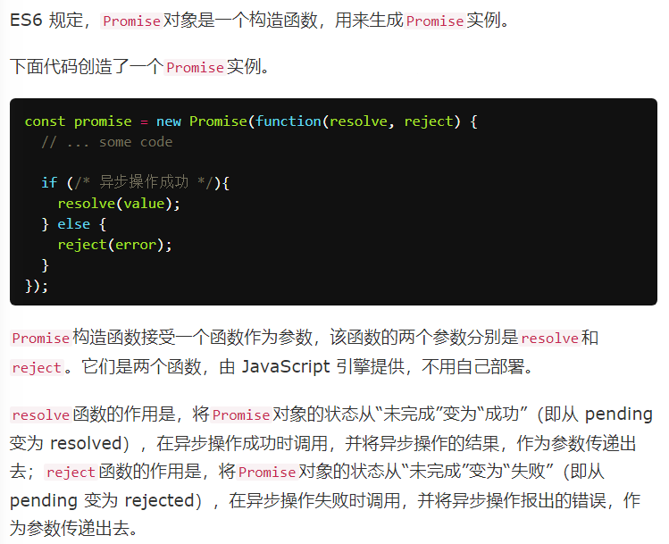

Promise 是异步编程的一种解决方案，比传统的解决方案——回调函数和事件——更合理和更强大。它由社区最早提出和实现，ES6 将其写进了语言标准，统一了用法，原生提供了Promise对象。
所谓Promise，简单说就是一个容器，里面保存着某个未来才会结束的事件（通常是一个异步操作）的结果。从语法上说，Promise 是一个对象，从它可以获取异步操作的消息。Promise 提供统一的 API，各种异步操作都可以用同样的方法进行处理。
Promise对象有以下两个特点。
（1）对象的状态不受外界影响。Promise对象代表一个异步操作，有三种状态：pending（进行中）、fulfilled（已成功）和rejected（已失败）。只有异步操作的结果，可以决定当前是哪一种状态，任何其他操作都无法改变这个状态。这也是Promise这个名字的由来，它的英语意思就是“承诺”，表示其他手段无法改变。
（2）一旦状态改变，就不会再变，任何时候都可以得到这个结果。Promise对象的状态改变，只有两种可能：从pending变为fulfilled和从pending变为rejected。只要这两种情况发生，状态就凝固了，不会再变了，会一直保持这个结果，这时就称为 resolved（已定型）。如果改变已经发生了，你再对Promise对象添加回调函数，也会立即得到这个结果。这与事件（Event）完全不同，事件的特点是，如果你错过了它，再去监听，是得不到结果的。
注意，为了行文方便，本章后面的resolved统一只指fulfilled状态，不包含rejected状态。
有了Promise对象，就可以将异步操作以同步操作的流程表达出来，避免了层层嵌套的回调函数。此外，Promise对象提供统一的接口，使得控制异步操作更加容易。
Promise也有一些缺点。首先，无法取消Promise，一旦新建它就会立即执行，无法中途取消。其次，如果不设置回调函数，Promise内部抛出的错误，不会反应到外部。第三，当处于pending状态时，无法得知目前进展到哪一个阶段（刚刚开始还是即将完成）。
如果某些事件不断地反复发生，一般来说，使用 Stream 模式是比部署Promise更好的选择。


Promise新建后是立即执行的，要注意这一特点

可用于异步加载图片/ajax
resolve函数的参数除了正常的值以外，还可能是另一个 Promise 实例，比如像下面这样。

调用resolve或reject并不会终结 Promise 的参数函数的执行，如有必要的话可以加上return语句。
==========================
then方法
为 Promise 实例添加状态改变时的回调函数。
then方法返回的是一个新的Promise实例（注意，不是原来那个Promise实例）。因此可以采用链式写法，即then方法后面再调用另一个then方法。
（then中设置的回调函数的返回值会作为该Promise状态改变结果的参数，如果这个返回值本身也是一个promise，则会等待其结果，否则默认为resolved（除非代码出错导致抛出错误），注意下面的例子，第一个失败了，触发了then中的error，新promise直接拿到结果2，所以是resolved）
new Promise((a,b)=>{b(1)}).then(a=>a,b=>2).then(a=>console.log(a),b=>console.log(3)) //2
==============================
catch方法
.then(null, rejection)的别名，用于指定发生错误时的回调函数。
reject方法的作用，等同于抛出错误。（这里讨论的错误可能是reject产生的错误，也可能是代码执行过程产生的错误）
如果 Promise 状态已经变成resolved，再抛出错误是无效的。

使用catch的好处在于能捕获前面的then抛出的错误
如果没有使用catch方法指定错误处理的回调函数，Promise 对象抛出的错误不会传递到外层代码，即不会有任何反应。
在node环境下：


一般总是建议，Promise 对象后面要跟catch方法，这样可以处理 Promise 内部发生的错误。catch方法返回的还是一个 Promise 对象，因此后面还可以接着调用then方法。如果没有报错，则会跳过catch方法。
catch方法之中，还能再抛出错误。
============================
finally方法
finally方法用于指定不管 Promise 对象最后状态如何，都会执行的操作。该方法是 ES2018 引入标准的。
finally方法的回调函数不接受任何参数，这意味着没有办法知道，前面的 Promise 状态到底是fulfilled还是rejected。这表明，finally方法里面的操作，应该是与状态无关的，不依赖于 Promise 的执行结果。
finally方法总是会返回原来的值
============================
Promise.all方法用于将多个 Promise 实例，包装成一个新的 Promise 实例

如果作为参数的 Promise 实例，自己定义了catch方法，那么它一旦被rejected，并不会触发Promise.all()的catch方法。

==============================
Promise.race方法同样是将多个 Promise 实例，包装成一个新的 Promise 实例
const p = Promise.race([p1, p2, p3]);
上面代码中，只要p1、p2、p3之中有一个实例率先改变状态，p的状态就跟着改变。那个率先改变的 Promise 实例的返回值，就传递给p的回调函数。
应用：为另一个promise添加超时触发方法
=============================
Promise.resolve将现有对象转为 Promise 对象

根据参数的不同情况：
1.参数是一个 Promise 实例：不做任何修改、原封不动地返回这个实例。
2.参数是一个thenable对象（thenable对象指的是具有名为then的方法的对象）：
会将这个对象转为 Promise 对象，然后就立即执行thenable对象的then方法。
3.参数不是具有then方法的对象，或根本就不是对象：
返回一个新的 Promise 对象，状态为resolved
4.不带参数：直接返回一个resolved状态的 Promise 对象。

============================
Promise.reject(reason)方法也会返回一个新的 Promise 实例，该实例的状态为rejected。
注意，Promise.reject()方法的参数，会原封不动地作为reject的理由，变成后续方法的参数。这一点与Promise.resolve方法不一致。
====================
应用

使用 Generator 函数管理流程，遇到异步操作的时候，通常返回一个Promise对象。

=========================
实际开发中，经常遇到一种情况：不知道或者不想区分，函数f是同步函数还是异步操作，但是想用 Promise 来处理它。因为这样就可以不管f是否包含异步操作，都用then方法指定下一步流程，用catch方法处理f抛出的错误。一般就会采用下面的写法。
Promise.resolve().then(f)
上面的写法有一个缺点，就是如果f是同步函数，那么它会在本轮事件循环的末尾执行。
（因为then是异步执行块）
（也就是说执行顺序上还是会有缺陷）
const f = () => console.log('now');
Promise.resolve().then(f);
console.log('next');
// next
// now
那么有没有一种方法，让同步函数同步执行，异步函数异步执行，并且让它们具有统一的 API 呢？回答是可以的，并且还有两种写法。
1.用async函数来写
const f = () => console.log('now');
(async () => f())();
console.log('next');
// now
// next
2.使用new Promise()
（因为Promise是立即执行的）（这里要区分promise内部立即执行和then异步执行的区别）
const f = () => console.log('now');
(
() => new Promise(
resolve => resolve(f())
))();
console.log('next');
// now
// next
提案：提供Promise.try方法替代上面的写法
const f = () => console.log('now');
Promise.try(f);
console.log('next');
// now
// next
事实上，Promise.try就是模拟try代码块，就像promise.catch模拟的是catch代码块。